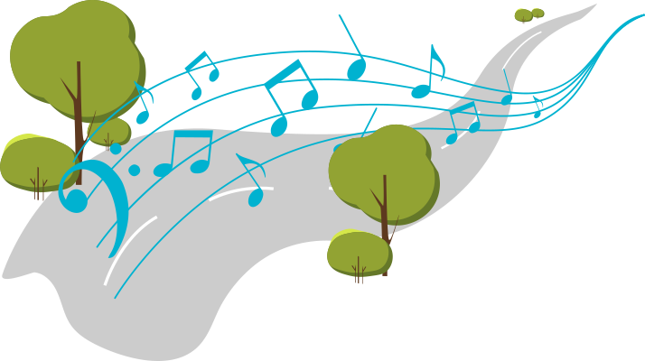

შევქმნათ საუნდტრეკი ანიმაციური ფილმისთვის

საუნდტრეკს უწოდებენ კინოფილმის, სპექტაკლის, ტელეგადაცემის, კომპიუტერული თამაშის მუსიკალურ გაფორმებას ან ამ მუსიკალური გაფორმების ცალკე გამოშვებულ დისკს. კინოში საუნდტრეკს კიდევ ხმის ბილიკსაც უწოდებენ.
